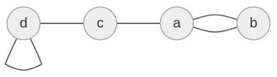
Graf (multigraf)
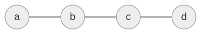
Graf prosty (graf)
Definicja graf
Grafem nazywamy (V,E,ϕ) gdzie
- ϕE1−1[V]≤2∖{∅}
- gdzie [V]≤2={A⊆V:∣A∣≤2}
- V - vertices
- E - edges
Przykład
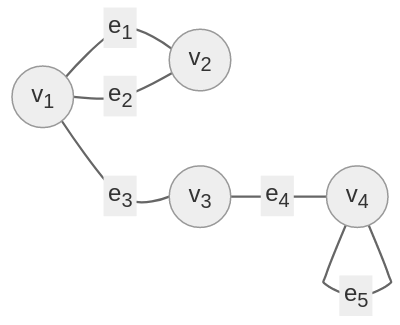
V={v1,v2,v3,v4}
E={e1,...,e5}
ϕ(e1)={v1,v2}
ϕ(e2)={v1,v2}
ϕ(e3)={v1,v3}
ϕ(e4)={v3,v4}
ϕ(e5)={v4}
Definicja graf prosty
Graf (V,E,ϕ) jest prosty, jeśli ϕ:E→[V]=2≡(∗)
[V]=2={A⊆V:∣A∣=2}
Uwagi:
- (∗)≡(V,E), gdzie E⊆[V]2
- Zał. że (V,E) jest prosty ∧ ∣V∣=n
- 0≤∣E∣≤(2n)=∣[V]=2∣=2n(n−1)
- Zał. że V={1,...,n}. Ile jest grafów prostych na V?
- odp. 2(2n)=∣P([1,...,n]2)∣
Przykład
n=10
2(2n)=229∗10=245≂1016
Rząd (stopień wierzchołka)
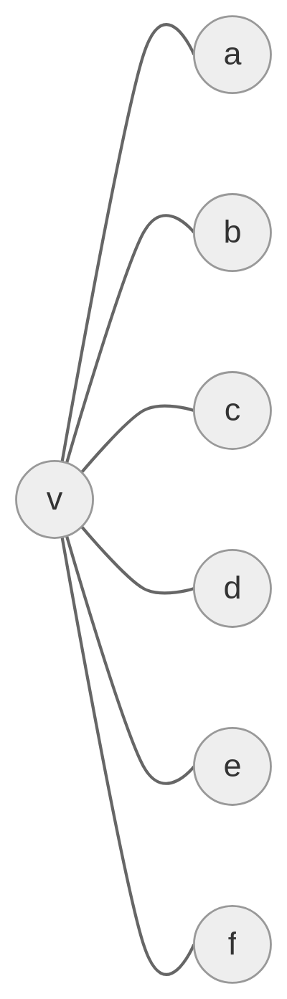
deg(v)=6
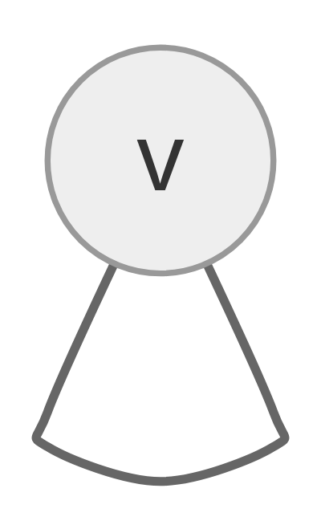
deg(v)=2
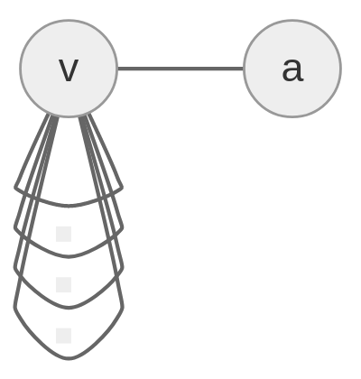
deg(v)=5
[[ϕ]]={1:ϕ≡True0:ϕ≡False
graf (V,E,ϕ)
deg(v)=2∑e∈L[[ϕ(e)={v}]]+∑e∈D[[v∈ϕ(e)]]
L={e∈E:∣ϕ(e)∣=1}
D={e∈E:∣ϕ(e)∣=2}
Przykład
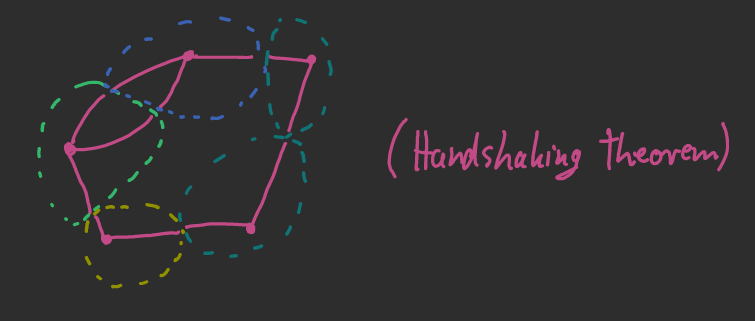
∑v∈V=2∣E∣
Twierdzenie #1
Dla dowolnego grafu mamy ∑v∈Vdeg(v)=2∣E∣
Dowód
v∈V∑deg(v)=v∈V∑(2e∈L∑[[ϕ(e)={v}]]+e∈D∑[[v∈ϕ(e)]])= 2v∈V∑e∈L∑[[ϕ(e)={v}]]+v∈V∑e∈D∑[[v∈ϕ(e)]]= 2e∈L∑v∈V∑[[ϕ(e)={v}]]+e∈D∑v∈V∑[[v∈ϕ(e)]]= 2e∈L∑1+e∈D∑2=2∣L∣+2∣D∣=2(∣L∣+∣D∣)=2∣E∣ ■
Macierzowe Reprezentacje
V={v1,v2,...,vn}
E={e1,e2,...,em}
Macierz sąsiędztwa
M=[aij] aij={∣{e∈L:ϕ(e)={vi,vj}}∣:i=j2∣{e∈E}∣
Macierz incydencji
N=[bij]i=1...n, j=1...m bij={1:ϕ(ej)∋vi∧∣ϕ(ej)∣=22:ϕ(ej)={vi}
Przykład
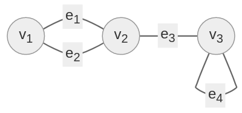
N=v1v2v3↓e1e2e3e4 ⎩⎪⎪⎪⎨⎪⎪⎪⎧ 1 1 0 2 1 1 0 2 0 1 1 2 0 0 2 2⎭⎪⎪⎪⎬⎪⎪⎪⎫deg(v1)deg(v2)deg(v3)∑
Wniosek: ∣{v∈V:¬(2∣deg(v))}∣ jest parzysta
Twierdzenie #2
Zał. że (V,E) jest grafem prostym,
wówczas ∑{x,y}∈E(deg(x)+deg(y))=∑x∈Vdeg2(x)
Dowód
{x,y}∈E∑(deg(x)+deg(y))=21{x,y}∈V∑[[{x,y}∈E]](deg(x)+deg(y))= =21(x∈V∑y∈V∑([[{x,y}∈E]]deg(x))+x∈V∑y∈V∑([[{x,y}∈E]]deg(y)))= =21(x∑deg(x)(y∑[[{x,y}∈E]])+y∑deg(y)(x∑[[{x,y}∈E]]))= =21(x∑deg2(x)+y∑deg2(y)) ■
ϕ jest izomorfizmem…
…grafów prostych (V1,E1) oraz (V2,E2) jeśli:
- ϕ:V11−1naV2
- (∀x,y∈V1)({x,y}∈E⟺{ϕ(x1),ϕ(x2)}∈E2)
Przykład
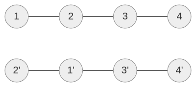
Przykład
Ile jest nieizomorficznych grafów prostych na {1,...,n}
odp.: Ln∼n!2(2n)
Przykład
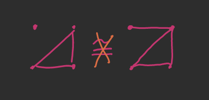
Definicja Wektor rzędów
Niech (V,E) będzie grafem prostym V={v1...vn}
Wektor rzędów: sort((deg(v1),deg(v2),...,deg(vn)))
Przykład
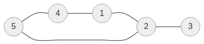
(2,4,1,3,2)↢(4,3,2,2,1)
Uwagi
- (d1,...,dn) - wektor rzędu
- d1≥d2≥...≥dn
- d1≤n−1
- (V1,E1)IZO≅(V2,E2)⟹ mają te same wektory rzędów
Definicja Graficzność ciągu
Ciąg (d1...dn) jest graficzny, jeśli istnieje graf prosty (V,E) o tym rzędzie
Twierdzenie Havel-Hakiri
Ciąg g=(g1...gn) jest graficzny ⟺ gdy ciąg (g2′...gn′) jest graficzny, gdzie gi={gi−1:i=2...g1+1gi:i=g1+2,...n
Przykład
(3,3,3,2,2) - graf
≡
(2,2,1,2) - graf
≡
(2,2,2,1) - graf
≡
(1,1,1) - graf
≡
(0,1) - graf
≡
(1,0)
≡
(−1)